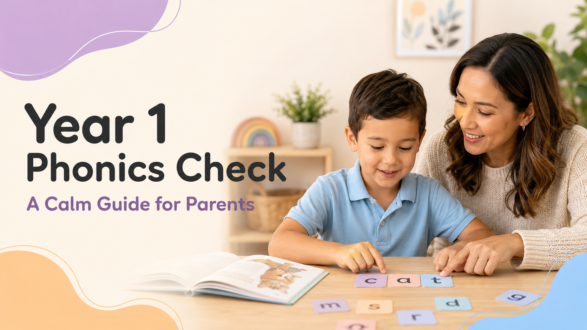
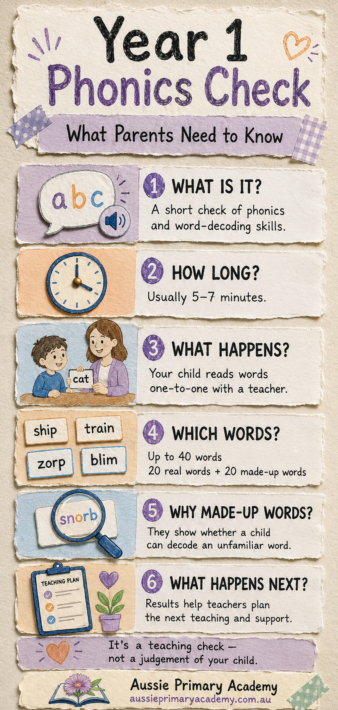

Year 1 · Phonics · Parent Guide
Year 1 Phonics Check Australia: A Calm Guide for Parents
What the check involves, why children read real and made-up words, what the result means—and how to help without turning home reading into a test.

If your child is in Year 1, you may have heard their teacher mention a phonics check. For many parents, the word check immediately brings questions: Is this a test? Should we practise? What happens if my child finds it difficult?
The reassuring answer is that the Year 1 Phonics Check is not designed to judge your child's intelligence or their complete reading ability. It is a brief assessment that helps teachers see how confidently a child can use letter–sound knowledge to read unfamiliar words.
The result gives the teacher practical information: what your child already understands, where extra teaching may be useful and what to focus on next.
First, What Is Phonics?
Phonics connects the sounds we hear in spoken words with the letters and letter groups we see in print.
Children learn that a letter such as m can represent /m/, while two letters such as sh can work together to represent one sound. They then learn to blend sounds when reading:
c – a – t → cat
When spelling, children learn to segment a spoken word into its sounds:
dog → d – o – g
Phonics is an important part of learning to read, but it is not the whole of reading. Children also need vocabulary, oral language, fluency, comprehension, background knowledge and plenty of opportunities to enjoy meaningful books.
What Is the Year 1 Phonics Check?
A short, individual assessment that shows how a child applies phonics to words.
In the checks currently used in Victoria, NSW and South Australia, children generally read up to 40 words aloud:
- 20 real words
- 20 made-up or pseudo-words
The check usually takes about five to seven minutes and is completed individually with a teacher in a quiet setting. It is deliberately brief and is not intended to feel like a long exam.
Arrangements are not identical across Australia. Government, Catholic and independent schools may follow different requirements, dates and reporting processes. Your child's school is the best source for the exact details that apply locally.

Why Are Made-Up Words Included?
They help separate genuine decoding from simple word memory.
If a child reads only familiar words, they may recognise some from memory. A made-up word gives the teacher a clearer view of whether the child can notice the letters, connect them with sounds, keep the sounds in order and blend them into a complete word.
For example, a child may never have seen the made-up word vab, but they can still use their knowledge of v, a and b to attempt it.
Important: your child is not expected to explain what a made-up word means. It has no meaning. The purpose is simply to see how they approach an unfamiliar written word.
Is It a Pass-or-Fail Test?
It is more useful to think of it as a teaching check.
Some systems use an expected-achievement benchmark. Victoria, for example, currently describes 28 to 40 as at or above the expected level and 0 to 27 as below the expected level.
One score does not describe everything your child can do as a reader. The check does not fully assess comprehension, vocabulary, storytelling, writing, creativity, effort, enjoyment of books or intelligence.
A child may understand stories beautifully but need support to decode unfamiliar words. Another may decode accurately but need help explaining what a text means. Both children have strengths, and both may have a next step to learn.
Does My Child Need to Study for It?
No intensive test preparation is needed.
You do not need to find the exact check words, create timed tests or ask your child to memorise long lists. Heavy preparation can create anxiety and may stop the check from showing the teacher an accurate picture of the child's current skills.
Short, relaxed practice that builds genuine reading skills is much more useful:
- read short decodable texts together
- say sounds and blend them into a word
- build simple words with magnetic letters or cards
- notice familiar letter patterns in books
- segment a spoken word before spelling it
- keep sharing books for enjoyment
Five calm minutes can be more helpful than a long session that ends in frustration.
A Simple Four-Step Phonics Routine
Try this with a word such as ship.
1. Look: “Which letters are working together?” Help your child notice sh.
2. Say: Say the sounds cleanly: /sh/ – /i/ – /p/.
3. Blend: Move smoothly through the sounds: sh-i-p → ship.
4. Use: Put the word into a sentence so phonics stays connected to meaning.
What If My Child Guesses or Reads Slowly?
Occasional guessing does not mean a child is failing. If they regularly look at the first letter and guess the rest, gently bring their attention back to the complete word:
- “Let's look all the way through the word.”
- “What sound does this part represent?”
- “Say each sound, then blend them together.”
Slow reading is not automatically poor reading. Beginning readers often need time to recognise letter patterns and blend sounds. Accuracy and a successful strategy matter more than rushing.
What If the Result Is Below the Expected Level?
A below-expected result is information—not a label.
It may show that your child needs further instruction or closer monitoring in particular phonics skills. Support could include revisiting specific letter–sound relationships, extra blending practice, small-group teaching, carefully matched decodable texts and progress monitoring.
Useful questions to ask the teacher include:
- Which phonics skills can my child use confidently?
- Which sounds or letter patterns are difficult?
- What support will happen at school?
- What is one useful activity we can practise at home?
- How and when will progress be reviewed?
What About Children Who Speak Another Language at Home?
Your child's home language or dialect is a valuable part of their identity, family and community. Families do not need to stop using it.
Some English sounds may be unfamiliar because they work differently in another language. This can mean a child needs explicit teaching and practice—not that there is anything wrong with the language spoken at home. Children can continue developing their home language while learning to read and write Standard Australian English at school.
How to Help Without Creating Pressure
Helpful support feels like a short learning moment, not another test. Praise the strategy rather than only the correct answer:
“You looked at every part of that word.”
“You kept the sounds in the right order.”
“You tried again and blended it carefully.”
Phonics helps children unlock written words, but do not forget meaning. After reading a sentence, ask one natural question such as “What happened?”, “What did you learn?” or “What might happen next?”
Free Year 1 Phonics Practice
Low-pressure, Australian Curriculum-aligned practice for early readers.
- Year 1 · Phonics
- Year 1 · Phonics
Blending
Consonant Blends
Practise reading and spelling words with common blends.
View Free Worksheet → - Year 1 · Phonics
- Foundation · Phonics
Frequently Asked Questions
Clear answers to the questions parents ask most often.
How long does the Year 1 Phonics Check take?
The checks used in Victoria, NSW and South Australia generally take about five to seven minutes and are usually completed individually with a teacher.
How many words will my child read?
Common Australian checks use up to 40 words: 20 real words and 20 made-up words. School arrangements may vary.
Why are made-up words included?
They help teachers see whether a child can apply phonics to an unfamiliar word instead of relying only on memory.
Is 28 out of 40 a pass?
Some systems use 28 as an expected-achievement benchmark. It is best understood as a teaching indicator, not a judgement of intelligence or complete reading ability.
Will I receive my child's result?
Schools generally share relevant assessment information through their usual reporting process. Ask your child's teacher how and when the result will be communicated.
Should we practise made-up words?
A little playful practice can show a child that the goal is to decode the letters. There is no need for intensive drilling or memorising test-style lists.
What if my child feels nervous?
Explain that they will simply read a few words with their teacher and that it is okay not to know every word immediately. Avoid presenting the check as a high-stakes exam.
Does a low score mean my child has dyslexia?
No. A phonics-check score alone cannot diagnose dyslexia or another learning difficulty. Discuss ongoing concerns with the teacher and an appropriately qualified professional.
Can comprehension be strong while phonics is difficult?
Yes. A child may understand stories read aloud and have strong vocabulary while finding written-word decoding difficult. Reading contains several connected skills.
Official Information
- Victorian Government — Victorian Year 1 Phonics Check
- Victorian Government — Phonics: A Guide for Parents and Carers
- NSW Department of Education — Year 1 Phonics Screening Check
- South Australian Department for Education — Phonics Screening Check
- Australian Government Department of Education — Year 1 Phonics Check
A Final Reassurance
The Year 1 Phonics Check is not a verdict on your child. It is a brief snapshot that helps a teacher answer one useful question: What does this child need to learn next?
Keep reading together, keep language enjoyable and celebrate careful attempts—not only perfect answers. If you are unsure what a result means, begin with a calm conversation with your child's teacher.